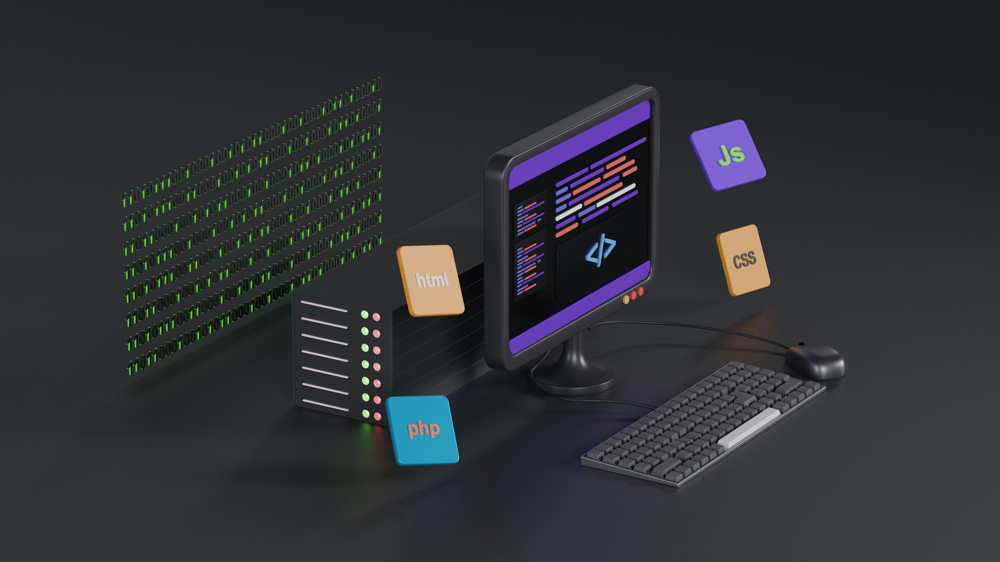
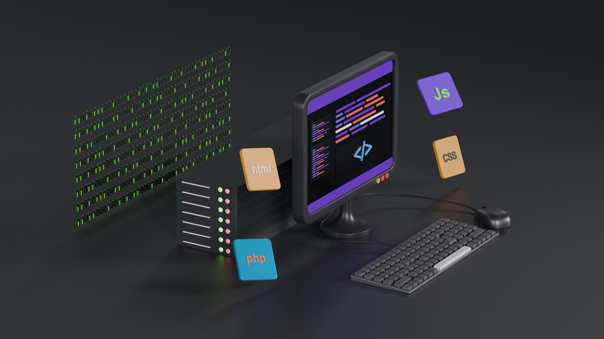

Hola, mi nombre es Francisca Soto
üë©‚Äçüíª Programadora y Analista de Sistemas titulada en 2023, con experiencia en QA y desarrollo web. Manejo tecnolog√≠as como HTML, CSS, JavaScript, React, C++, C# y JSON, y herramientas como Git, GitHub, Figma, Postman y VS Code. Trabajo como freelancer, ofreciendo soluciones modernas y funcionales en desarrollo web, testing y dise√±o de interfaces.
Mis Proyectos